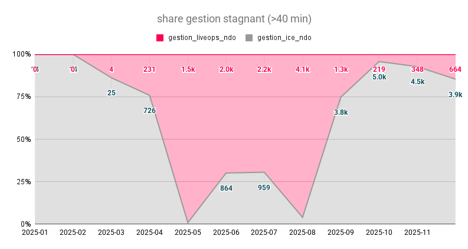
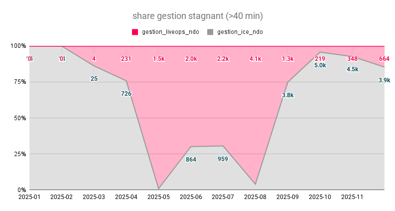

Lógica de Gestión Stagnant
Automation 3rd Layer | Data 2025
Matriz de Validación
| Stagnant Type | Select Zone | Exclude Zone | Order Status | Stagnant Time | Rider Status | Vehicle Type | Stacked Orders | Rider PU Distance | Rider DO Distance | Action | Fall Back | Backup Note |
|---|---|---|---|---|---|---|---|---|---|---|---|---|
| Queued | Exclude Zone Si la ciudad está en lista de exclusión, la orden se descarta de gestión automática. |
Queued Status Valida que la orden esté en estado Queued en Hurrier. |
Dispatch | ✓ | ||||||||
| Dispatch | Select Zone Zona debe estar activa en configuración regional. |
Exclude Zone Si la ciudad está excluida, se descarta. |
Dispatch Status Valida estado Dispatch/Driver Assignment. |
Stagnant Time > 25 min Umbral: Si el tiempo en Dispatch supera 25 minutos desde asignación. |
Undispatch, Update | Fallback Si falla undispatch, intenta update en Hurrier. |
✓ | |||||
| Accepted | Exclude Zone Si zona está excluida, se descarta de gestión. |
Accepted Status Valida que está en estado Accepted/Driver Accepted. |
Stagnant Time > 20 min Umbral: Aceptada hace más de 20 minutos. |
Rider Break/Off Si rider está en Break u Offline, se reasigna. |
Bike, Walker, Moto Validar tipo de vehículo para ajustar umbrales. |
Stacked Orders Si rider tiene múltiples órdenes stacked, análisis de impacto. |
PU Distance > 200m Si distancia a pickup > 200m, se considera crítica. |
Undispatch | Fallback Si undispatch falla, intenta reasignación forzada. |
✓ | ||
| Near Pickup | Exclude Zone Validar si zona está en lista de exclusión. |
Near Pickup Status Estado: Near Pickup Location. |
Rider Break/Off Si rider está en Break/Off, reasignar. |
Sin Stacking Preferente en órdenes sin múltiples asignaciones. |
PU Distance > 100m Distancia crítica para Near Pickup: > 100m. |
Undispatch | Fallback Reasignación Hard o Soft según disponibilidad. |
✓ | ||||
| Picked Up | Exclude Zone Validar exclusión de zona. |
Picked Up Status Estado: Order Picked Up / En Ruta. |
Sin Stacking Si hay stacking, análisis de priorización de delivery. |
Complete | Fallback Si no se puede completar, contact rider. |
✓ | ||||||
| Left Pickup | Exclude Zone Validar exclusión. |
Left Pickup Status Estado: Rider Left Pickup Location. |
Sin Stacking Orden en tránsito sin stacking. |
Validate DO Distance Distancia al punto de entrega. |
Complete | Fallback Escalación a revisión manual si hay retrasos. |
✓ | |||||
| Near Dropoff | Exclude Zone Validar exclusión. |
Near Dropoff Status Estado: Rider Near Dropoff Location. |
DO Distance < 100m Distancia al punto de entrega < 100m. |
Complete | Fallback AutoComplete forzado si PIN timeouts. |
✓ | ||||||
| Send to Vendor | Exclude Zone Validar zona para STV. |
STV Status Estado: Send to Vendor elegible. |
Update, STV | Fallback Retry STV o escalación manual. |
✓ |
Protocolo Pre-Acción
-
1.
Sincronización BigQuery-Sheets: Filtrado de órdenes con >X minutos de estancamiento.
-
2.
Validación de Exclusión: El motor verifica si la ciudad o zona está en la "lista blanca" de gestión activa.
-
3.
Health Check Driver: Confirmación de sesión Okta activa antes de iniciar scraping individual.
Protocolo Post-Acción
-
1.
Escritura de Log en Hurrier: Inyección de nota técnica para visibilidad de los analistas manuales.
-
2.
Update Histórico: Registro de la gestión exitosa en la base de datos de impacto (Rising LiveOps).
-
3.
Notificación Slack (Alerting): Si la gestión falla tras 3 intentos, se deriva a canal de revisión manual.
LiveOps Engine Architecture
Automation 3rd Layer | Data 2025
Capas del Proyecto
01. Development
Python, SOLID & Seguridad
02. Interface
PyQt5 & Paneles UI
03. Controller
Patrón MVC & Concurrencia
Documentación
Stagnant Execution Flow
 BigQuery
BigQuery G-Sheets
G-Sheets Engine
Engine Selenium
Selenium Hurrier
HurrierReporting Execution Flow
EngineHurrier GrafanaG-Sheets
GrafanaG-Sheets Slack
SlackDAS Events Execution Flow
HurrierBigQuery GeminiEngine
GeminiEngine DAS
DASLiveOps Engine Performance
Automation 3rd Layer | Data 2025
Hito Automation 2025
47,288 Órdenes
Evolución Operativa
Pasa el cursor sobre los meses para ver el detalle táctico
Selecciona un mes para ver el contexto.
Resultados Consolidados Diciembre
Share de
Automatización
88%
Máximo histórico alcanzado en Diciembre.
Aumento de
Capacidad
22.1k
Órdenes gestionadas en un solo mes.
Efectividad
Sostenida
>86%
Tasa de éxito bajo alta demanda operacional.
Hito de
Eficiencia
1 Mes ≈ 1 Año
Igualamos la gestión manual total de 2024.
Casos de Éxito Tácticos
Caso Near Dropoff
Resultado: 0% Stagnant NDO. Eliminación total de órdenes estancadas mediante el ajuste de umbrales de autocomplete en órdenes con PIN (180' → 40').
 

Caso Accepted
Gestión Tercera Capa. Los automatismos (ICE) solo capturan entre el 20-30% de los casos. El Engine cubre el GAP restante reduciendo FR de 21.8% (Sin gestión) a 11.8% (Gestión óptima).
Eficiencia de Flota
Reducción Fake Hours. Libera a rider para nuevos pedidos y corrige WH (3k - 5k horas falsas/mes ).
Efectividad de Gestión (EG%)
Proporción de Órdenes Confirmadas vs. Total Gestión
Insights de Rendimiento
A pesar del incremento masivo de volumen (+4x vs Agosto), la efectividad de gestión (EG) se mantiene estable sobre el 86%.
La mejora en la tasa de éxito entre el Q1 y Q4 es de +21.3 pp.
EG Q1-2025
67.3%
VS
EG Q4-2025
89.0%